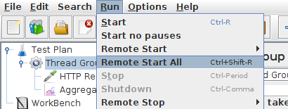

This short tutorial explains how to use multiple systems to perform stress testing. Before we start, there are a couple of things to check.
- the firewalls on the systems are turned off or correct ports are opened.
- all the clients are on the same subnet.
- the server is in the same subnet, if 192.x.x.x or 10.x.x.x IP addresses are used.
If the server doesn't use 192.xx or 10.xx IP address, there shouldn't be any problems.
- Make sure JMeter can access the server.
- Make sure you use the same version of JMeter and Java on all the systems. Mixing versions will not work correctly.
- You have setup SSL for RMI or disabled it.
Once you've made sure the systems are ready, it's time to setup remote testing. The tutorial assumes you already
have JMeter installed on all the systems. The way JMeter works is one controller node initiates the test on multiple worker nodes.
| In this tutorial we use GUI Mode just for demonstration. In real life you should use CLI mode (NON GUI) to start your load test |
One controller node with multiple worker nodes |
|
25.1 Terminology
|
Before we dive into the step-by-step instructions, it's a good idea to define the terms and make sure the definition is clear.
- Controller Node
- the system running JMeter GUI, which controls the test
- Worker Node
- the system running jmeter-server, which takes commands from
the GUI and send requests to the target system(s)
- Target
- the webserver we plan to stress test
|
|
|
25.2 Step-by-Step
|
- On the worker nodes, go to jmeter/bin directory and execute
jmeter-server.bat (jmeter-server on unix).
- On controller node acting as the console, open windows explorer and go to
jmeter/bin directory
- Open jmeter.properties in a text editor
- Edit the line remote_hosts=127.0.0.1
- Add the IP address. For example, if I have JMeter server running on 192.168.0.10,
…, 192.168.0.15, the entry would look like this:
 |
|
|
|
remote_hosts=192.168.0.10,192.168.0.11,192.168.0.12,192.168.0.13,192.168.0.14 |
|
|
|
|
- Start JMeter.
- Open the test plan you want to use
|
|
|
25.4 Start all clients
|
- Click Run at the top
- Select Remote Start all or use Ctrl + Shift + R

Start all worker nodes |
|
|
|
25.5 Limitations
|
There are some basic limitations for distributed testing. Here's the list of the known items in no specific order.
- RMI cannot communicate across subnets without a proxy; therefore neither can JMeter without a proxy.
- Since version 2.9, JMeter sends all the test results stripping Response data to the controlling console, this allows
us to reduce impact on network IO. Ensure you monitor your network traffic so that this traffic does not incur contention
- A single JMeter client running on a 2-3 GHz CPU (recent CPU) can handle 1000-2000 threads depending on the type of test.
|
|
|
25.7 Tips
|
In some cases, the firewall may still be blocking RMI traffic.
Anti Virus and Firewall
| Antivirus should be stopped during a Load Test as it can drastically impact timings leading to wrong results. |
Firewall needs to be stopped from windows services or at least some ports need to be opened.
- Open control panel
- Open administrative tools
- Double click services
- Go to down to Symantec anti virus, right click and select stop
Windows firewall
- Open network connections
- Select the network connection
- Right click and select properties
- Select advanced tab
- Uncheck internet connection firewall
Linux
On Linux, iptables might be turned on by default. For instructions, please refer to the
Remote Testing in the user manual
On RedHat (or derivatives), iptables is turned on by default. Execute
to stop the Linux firewall or ensure you open the correct ports.
|
|
|